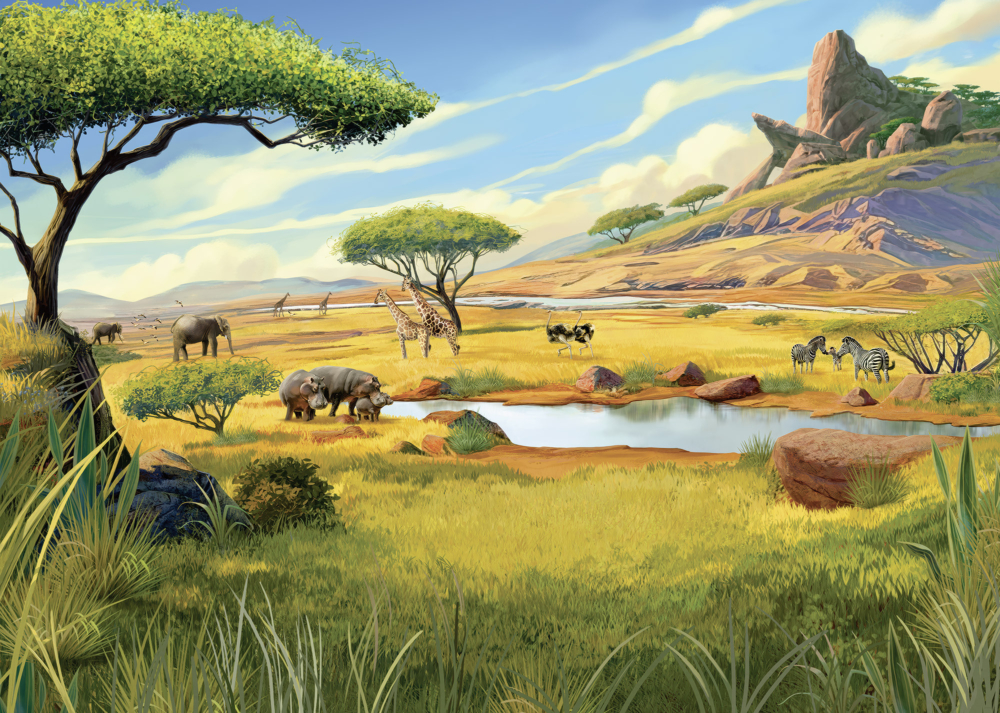
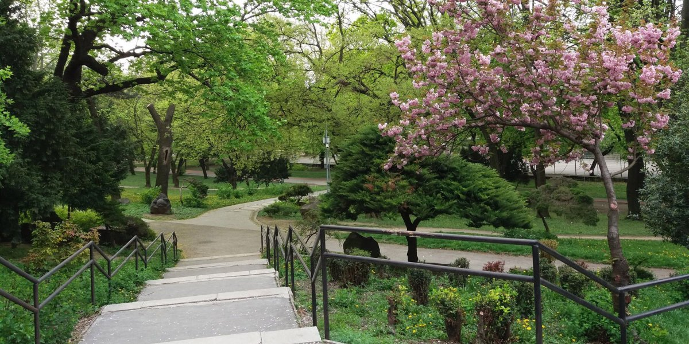

Tracked Elements — look at any card
Experiment Round: 1


Detection Range Visualization
The ellipse shows the confident gaze detection zone — the region covered by the 3×3 calibration grid. Gaze outside this area may be less accurate.